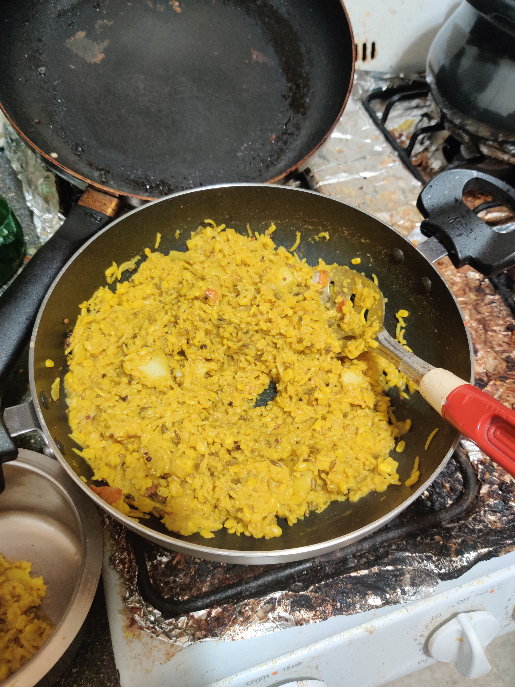
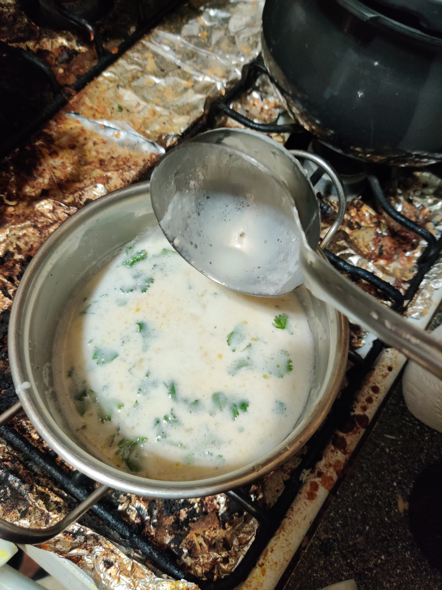
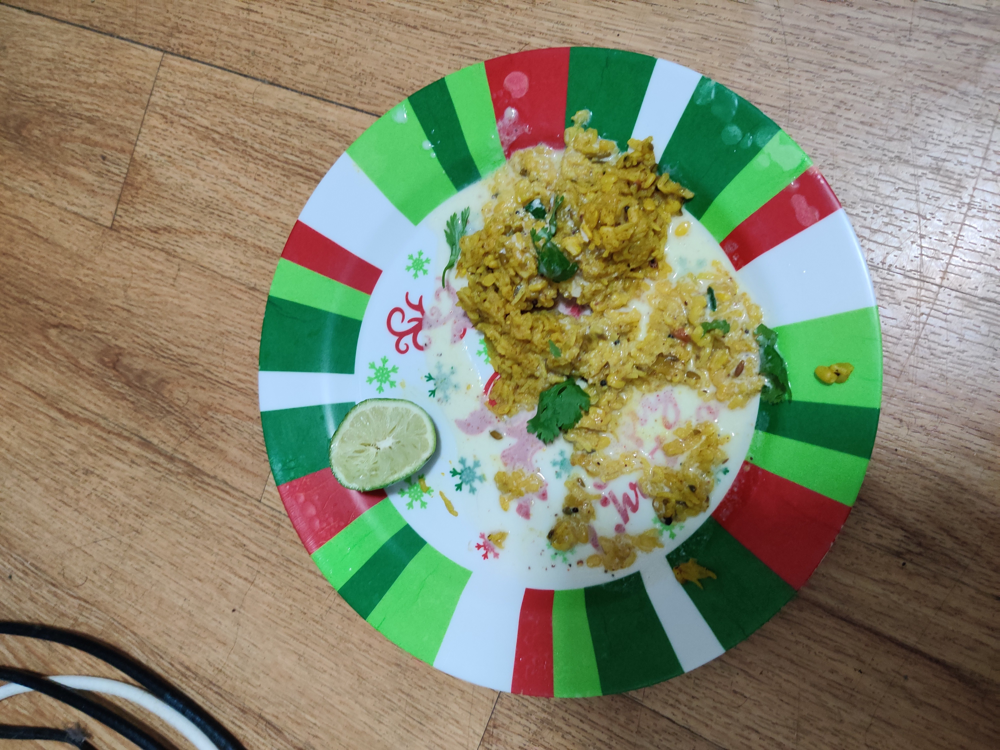
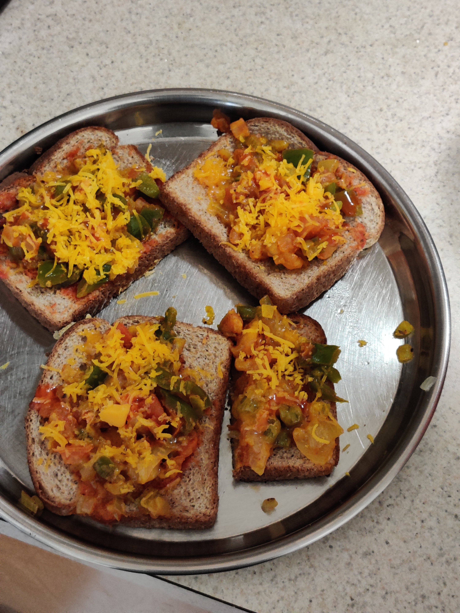
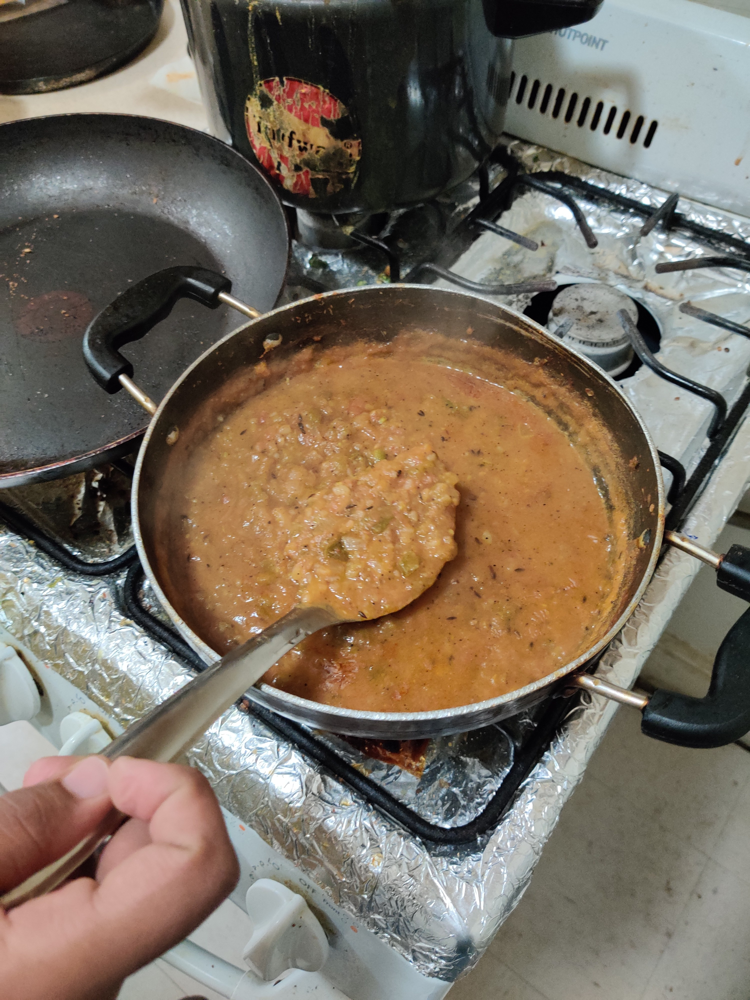
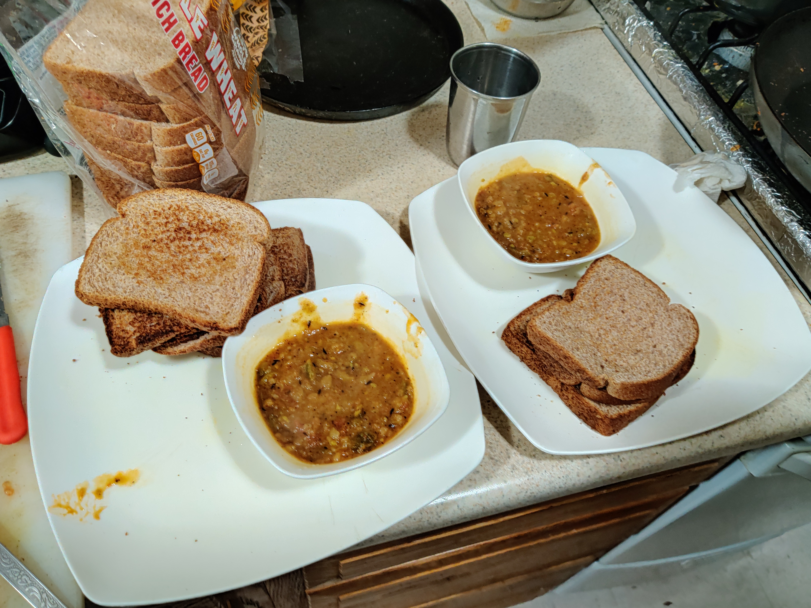
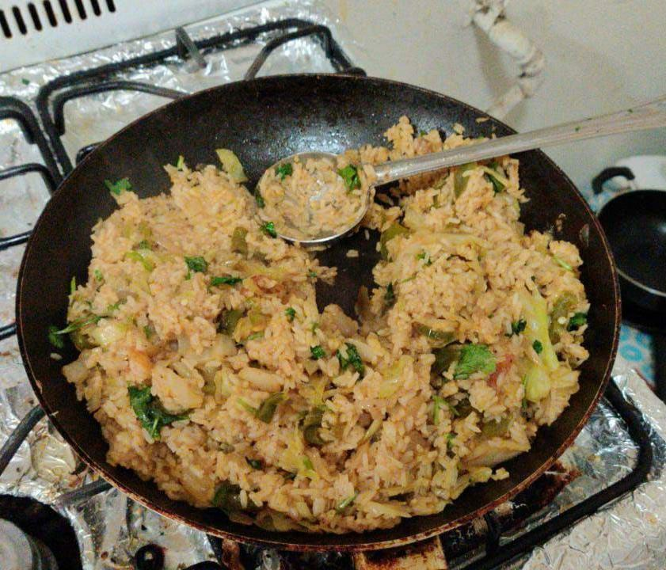
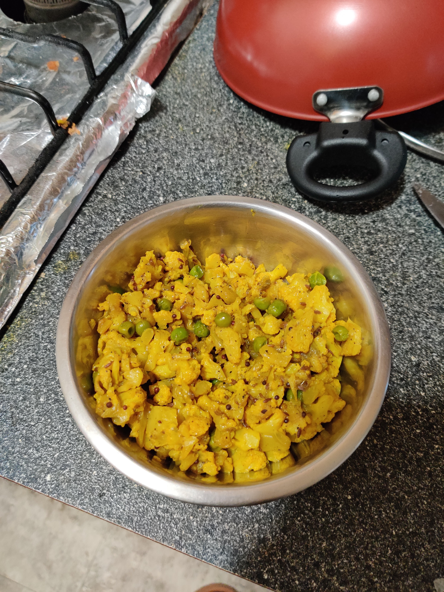
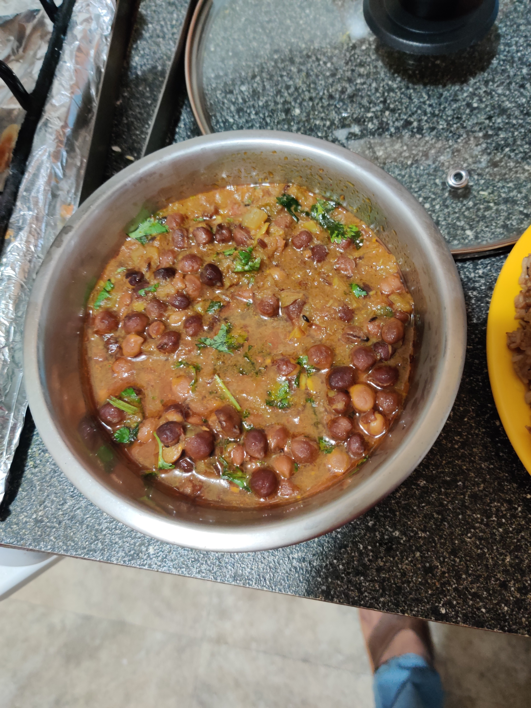

Unfortunately only 3-4% of citizens in the US are vegetarian. After rambling around nearby streets, I got to know veg stuff was obscured everywhere. Even Subway/McDonald's were no exception. So here is a dynamic N00Bs guide in becoming a Masterchef with vegetarian things available in Boston. Okra was one of my favourite dish, I had planned to survive on it it became worse when I got to know that too was not available. I found it in one store one day, but it was out of my budget 5$ for 12oz(300gm)
Masala Khichidi with Kadhi
  Pizza toppings on a brownbread
P.S. Pizza base coss around 4$ for 2, bread is 1.6$ for a loaf.
Pav Bhaji
 Pulao
Cauliflower
Chana(black)

 Never miss a story from us, subscribe to our newsletter
Never miss a story from us, subscribe to our newsletter